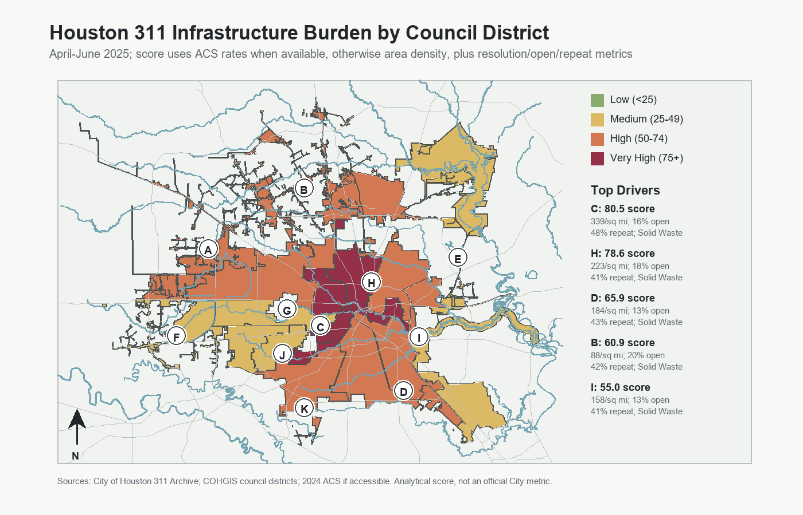

District Ranking
| District | Class | Score | Requests | Open | Long | Repeat | Rate | Top Category |
|---|
Key Findings
- 82,743 infrastructure-related 311 records were cleaned and analyzed.
- Solid Waste / Recycling is the largest standardized request category.
- Districts C and H rank Very High under the current V3 score.
- Repeat-location screening found 7,945 approximate coordinate/category clusters.
Interpretation
The score is an analytical index, not an official City performance metric. ACS normalization is supported, but the supplied Census key was rejected; the committed output therefore uses requests per square mile as the documented rate fallback.